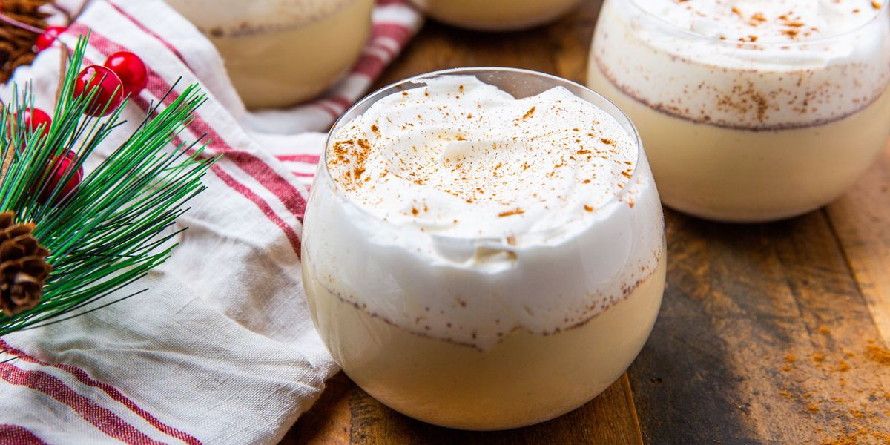

Amazingly Good Eggnog

Amazingly Good Eggnog
Ingredients
- Milk and Light Cream
- Spices and Seasonings
- Egg Yolks
- Sugar
- Rum
Steps
-
Heat the milk, cinnamon, cloves, and a dash of vanilla. Boil, then
remove from heat.
- Whisk the egg yolks, then whisk in the sugar.
- Gradually whisk the hot milk mixture into the egg mixture.
-
Cook the mixture over medium heat until thick, then strain to remove the
cloves.
-
Stir in the cream, rum, remaining vanilla, and nutmeg. Refrigerate
overnight.